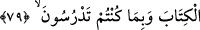

mâna ve hakikatten hiçbir iz taşımayan bazı (irşad) üslûpları uydururlar. Öyle ise akıllı
bir adam, bunların dış görünüşlerine kanmamalı, onların peşine takılarak, esas yoldan
çıkmamalı. Bilakis hak ile bâtılı; dış görünüş ile esas görünüşü, ârif ile câhili ayırd
etmeye çalışmalıdır. Hakkın karşısında dalâletten başka ne olabilir? Allah Teâlâ,
cümlemizi bunlara meyletmekten ve kötü amellerden korusun, âmin yâ Müteâl!
79. Hiçbir insanın, Allah’ın kendisine Kitap, hikmet ve peygamberlik vermesinden
sonra (kalkıp) insanlara: Allah’ı bırakıp bana kul olun! demesi mümkün değildir.
Bilakis (şöyle demesi gerekir): Okutmakta ve öğretmekte olduğunuz kitap
uyarınca Rabbe hâlis kullar olunuz.
“Hiçbir insana yakışmaz ki...” Bu ifade, kitap ehlinin peygamberlere ettikleri
iftiraları açıklamaktadır. Çünkü Necrân hıristiyanları, Îsâ’yı ilah edinmelerini, Hz.
Îsâ’nın emrettiğini -hâşa- söylemişlerdi.
Bir müslüman, Hz. Peygamber (s.a.)’e gelip: “Sizi de birbirimizi selamladığımız
şekilde selamlıyoruz. İsterseniz, sana secde edelim.” demişti de Hz. Peygamber (s.a.):
“Allah’dan başkasına tapınmaktan ve böyle bir emir vermekten Allah’a sığınırım”
diye cevap vermişti.[58]
Âyetin mânası şudur: İster insan, ister melek ister başka bir varlık, hiç kimsenin “bana
kulluk edin” demesi doğru ve câiz olmaz. Âyette hükmün illetini göstermek bakımından
“insana” isnad edilmiştir. Çünkü insan kâfirlerin isnâd ettikleri özellikten uzaktır.
Allah insana Tevrat, İncil ve Kur’ân gibi tevhîdi emredip şirki yasaklayan ve
gerçekleri ifade eden bir kitap, hüküm, anlayış, ilim ve peygamberlik versin de o kişi,
bana kul olun desin, bu mümkün değildir.
Kitap vermek, ilim ve amelde en iyi olmak diye ifade edilebilecek hikmetle aynı
mânada olan hükmü vermeyi de beraberinde getirmektedir. Bu sebeple kitap, hükümden
önce zikredilmiştir. Çünkü, hükümden maksat, şerîati bilmek, kitabın gaye ve
hükümlerini anlamaktır. Lügat ve tefsir âlimleri hüküm kelimesinin ilim mânasına
geldiği husûsunda hemfikirdirler. Allah Teâlâ: “Yahya’ya, daha sabî iken hüküm
verdik.” (Meryem, 19/12) yani ilim ve anlayış verdik, buyurmaktadır.
Semâvî kitap, önce kalbe nâzil olur. Sonra peygamberin aklında bu kitap ve bu kitabın
sırlarını kavrayış hâsıl olur. Bu kavrayış hâsıl olduktan sonra peygamber, anladıklarını
insanlara tebliğ eder. İşte peygamberlik alınan vahyi bu sûretle haber vermedir. Ne
kadar güzel bir tertip değil mi?